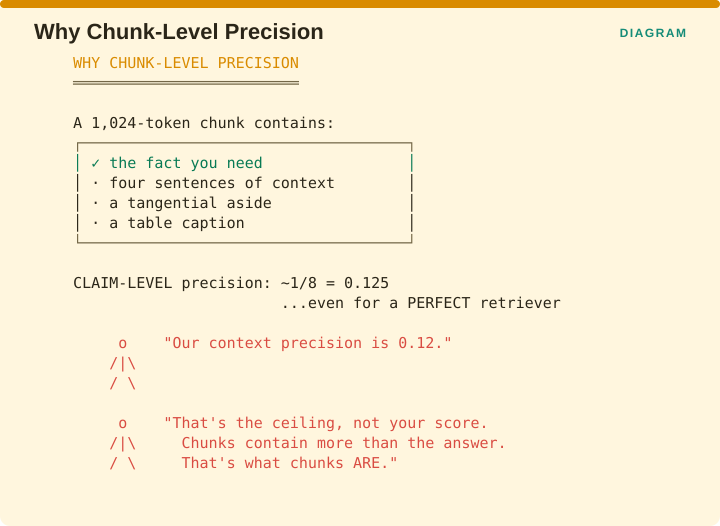

Measuring Retrieval › C.4 RAGChecker - the nine-metric diagnostic
C.4 RAGChecker - the nine-metric diagnostic
One-line: Claim-level entailment checking that produces overall, retriever, and generator metrics from a single extraction pass.
Facets: Correctness + Alignment | claim & chunk | ref + judge | E2E | ESTABLISHED VERIFIED Source: Ru et al., NeurIPS 2024 Datasets & Benchmarks Track · arXiv:2408.08067
The problem it solves
RAGAS tells you whether the answer is supported by the context it was given, and stops there. It cannot tell you whether the context contained the answer in the first place, whether a correct claim came from the documents or from the model’s memory, or whether a wrong claim was invented or faithfully copied from a misleading chunk. Those distinctions decide what you fix, and answering them requires a ground-truth answer alongside the context.
C.4.1 The full metric set, as defined
RAGChecker takes the query, the retrieved context, the response and the ground-truth answer, and emits three groups of metrics. The definitions below are the paper’s, as restated formally in a downstream benchmark.
Overall (needs response + ground truth only - no context required)
| Metric | Definition |
|---|---|
| Precision | Proportion of correct claims in the response |
| Recall | Proportion of ground-truth claims mentioned in the response |
| F1 | Harmonic mean |
Retriever
| Metric | Definition |
|---|---|
| Claim Recall (CR) | Proportion of ground-truth claims covered by the retrieved chunks |
| Context Precision (CP) | |{r-chunk}| / k - where a chunk is an r-chunk
if any ground-truth claim is entailed in it |
Generator
| Metric | Definition |
|---|---|
| Faithfulness (FT) | Proportion of response claims entailed by retrieved chunks - regardless of correctness |
| Self-Knowledge (SK) | Proportion of correct response claims not entailed by retrieved context |
| Context Utilization (CU) | Ratio of correct response claims supported by retrieved chunks, to total relevant ground-truth claims entailed by retrieved chunks |
| Hallucination (HL) | Proportion of incorrect claims entailed by neither the ground-truth answer nor any retrieved chunk |
| Relevant Noise Sensitivity NS(I) | Proportion of incorrect response claims entailed by relevant chunks |
| Irrelevant Noise Sensitivity NS(II) | Proportion of incorrect response claims entailed by irrelevant chunks |
Read together, those nine populate the four boxes from §C.1.2 and then subdivide two of them. Self-Knowledge is the correct-and-ungrounded box measured directly. Hallucination is the incorrect-and-ungrounded box. The two noise sensitivities split the incorrect-but-grounded box according to whether the misleading chunk was relevant or not, which matters because those two have different fixes.
C.4.2 The design detail worth understanding
Context Precision is defined at chunk level rather than claim level, and that is deliberate rather than a simplification.

The reasoning is in the figure. A 1,024-token chunk typically contains the fact you needed plus four sentences of surrounding context, a tangential aside and a table caption. Measured at claim level, precision on that chunk is roughly one useful claim out of eight, which is 0.125, and that holds even for a perfect retriever.
So a team reporting context precision of 0.12 has not found their score, they have found the ceiling. Chunks contain more than the answer, because that is what a chunk is. The paper’s point is that a metric whose maximum possible value moves around with the shape of your text is not usable, which is why the definition works at chunk level, where a chunk counts if any ground-truth claim is entailed anywhere inside it.
C.4.3 The trilemma - the paper’s most useful finding
The trilemma of context utilization, noise sensitivity, and faithfulness makes it difficult to improve all aspects simultaneously.

The figure draws the three as corners of a triangle with “pick two” in the middle. A team proposing to optimize all three at once is proposing something the paper says cannot be done, so the work is to prioritize deliberately in the prompt based on your targets, your users and what your generator is capable of.
The paper also gives concrete tuning direction, which is unusually actionable for a benchmark paper.
| Goal | Chunk strategy |
|---|---|
| Better context precision | Larger chunks, fewer of them |
| Better context utilization / lower noise sensitivity | The opposite - smaller, more numerous |
| Better recall / F1 | Moderately increase number and size; the effect saturates because total relevant information is fixed |
And one measured effect worth carrying: faithfulness rose from 88.1 to 92.2 as k moved from 5 to 20, so more context made the generator more faithful rather than less, which is the opposite of the common intuition that a longer prompt invites drift.
C.4.4 Advantages
- Nine metrics from one extraction pass, which is far cheaper than running nine separate evaluations.
- The only framework here that separates faithfulness from correctness by construction, since faithfulness is explicitly defined regardless of correctness. That honesty is rare and valuable.
- Self-Knowledge is the Lucky Guess detector, measuring correct claims not entailed by the context, which is the dangerous box from §C.1.2 quantified directly.
- Two-way noise sensitivity distinguishes being misled by a relevant chunk from being misled by an irrelevant one, and those call for different fixes.
- Actionable tuning guidance published alongside the metrics.
- Open implementation at
amazon-science/RAGChecker, so results are reproducible.
C.4.5 Disadvantages
- Reference-based, requiring ground-truth answers throughout, so no golden answers means no RAGChecker.
- Expensive, since it needs claim extraction plus entailment checking across the response, the context and the ground truth, and the reference implementations use 70B-class models for both the extractor and the checker.
- Two separate model dependencies, the extractor and the checker, each independently subject to version drift.
- Nine numbers is a great deal of dashboard, and teams routinely report all nine and read none, which §C.4.6 addresses.
- Claim extraction quality is an unmeasured upstream dependency. If the extractor splits an answer badly, every downstream metric inherits that error, and nothing in the framework surfaces it.
C.4.6 Recommendation
Run the full nine offline and promote three to your dashboard.

Claim Recall answers whether retrieval got the material at all, which sets the ceiling on everything downstream. Self-Knowledge is the Lucky Guess rate, measuring claims that are correct and ungrounded, and nobody else measures it while it is the most dangerous of the four boxes. Hallucination covers claims that are both wrong and unsupported, which is the classic failure.
Keep the other six for diagnosis, and reach for them when one of those three moves.
Do not put Faithfulness on the dashboard without Claim Recall beside it. This is the third time these correctness chapters have made that point, and it remains the single most repeated failure in RAG evaluation.
Measuring Retrieval · Madhava Gaikwad · First edition, September 2026